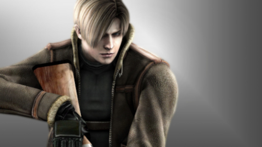

Arquivos da Umbrella: Os Agentes
Chris Redfield
Chris Redfield
Ex-membro da Força Aérea dos EUA, Chris se tornou um dos agentes mais importantes da BSAA na luta contra o bioterrorismo. Desde o incidente na mansão Spencer, ele tem sido uma peça-chave na contenção de ameaças virais pelo mundo. Corajoso, determinado e com forte senso de justiça, Chris é conhecido por sua força física e lealdade aos seus companheiros.
Leon S. Kennedy
Leon S. Kennedy
Leon estreou como policial novato em Raccoon City, no dia em que o caos tomou conta da cidade. Desde então, se tornou um agente do governo especializado em operações de alto risco. Carismático e habilidoso, Leon é conhecido por manter a calma mesmo nas situações mais extremas — e por sempre soltar uma piada sarcástica na hora errada.

Jill Valentine
Jill Valentine
Ex-integrante da equipe S.T.A.R.S., Jill é uma das sobreviventes do incidente da mansão. Inteligente, habilidosa e altamente treinada, ela dedicou sua vida a combater corporações responsáveis por armas biológicas. Jill é lembrada por sua bravura e por ser uma das primeiras a encarar de frente os horrores causados pela Umbrella.
Claire Redfield
Claire Redfield
Motivada pela busca por seu irmão desaparecido, Claire entrou de cabeça nos eventos de Raccoon City. Diferente de outros agentes, ela não possui treinamento militar formal, mas compensa com empatia, inteligência e muita coragem. Claire se envolveu com organizações de ajuda humanitária e continua lutando por um mundo livre de armas biológicas.
Ada Wong
Ada Wong
Enigmática e misteriosa, Ada é uma agente cujas verdadeiras intenções nunca ficam claras. Às vezes aliada, às vezes inimiga, ela trabalha por interesses próprios, muitas vezes ligada a organizações que competem com a Umbrella. Apesar de seu ar frio e calculista, Ada mostra, ocasionalmente, que guarda sentimentos ocultos — especialmente por um certo agente de jaqueta de couro.